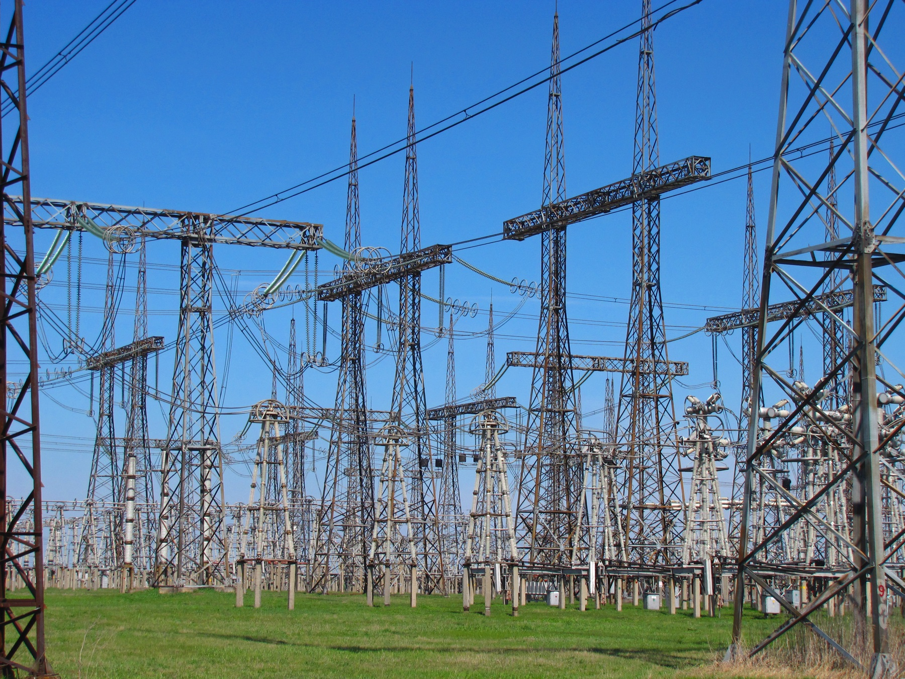
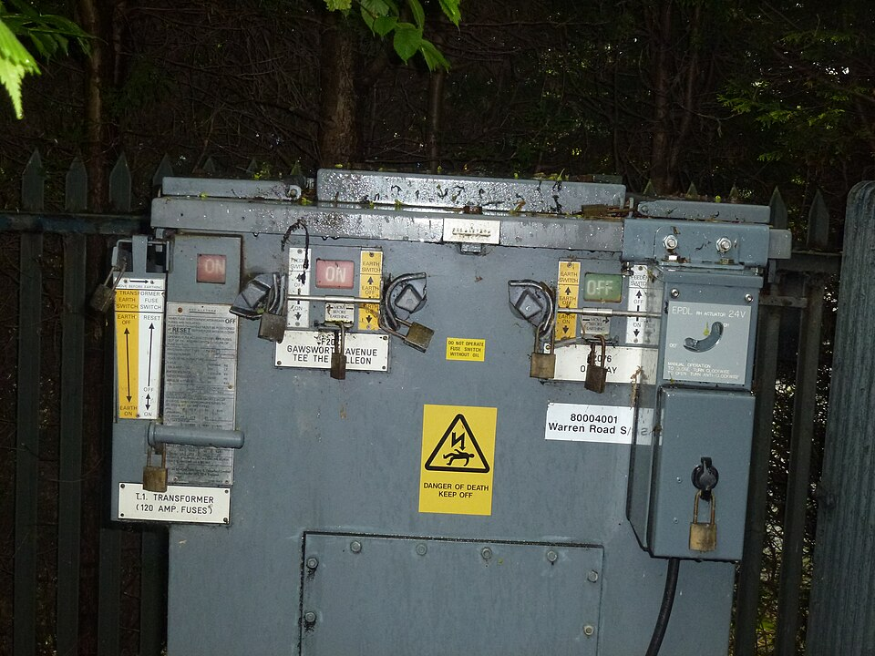
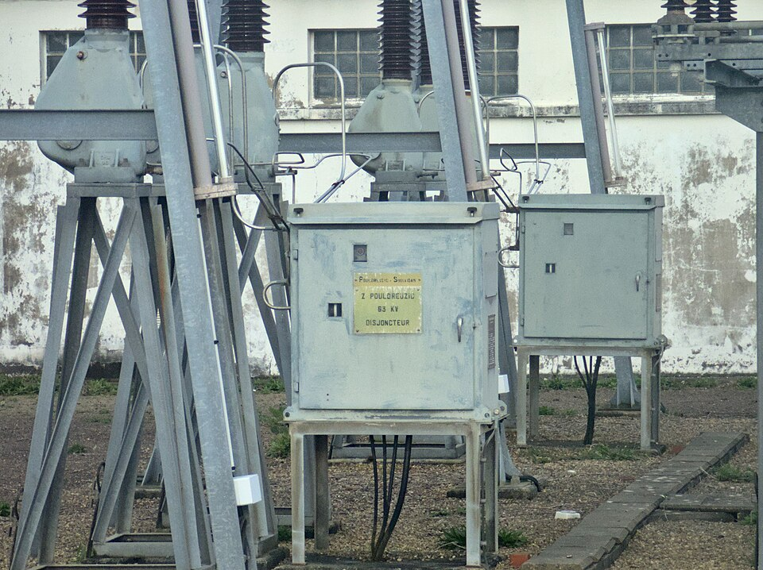
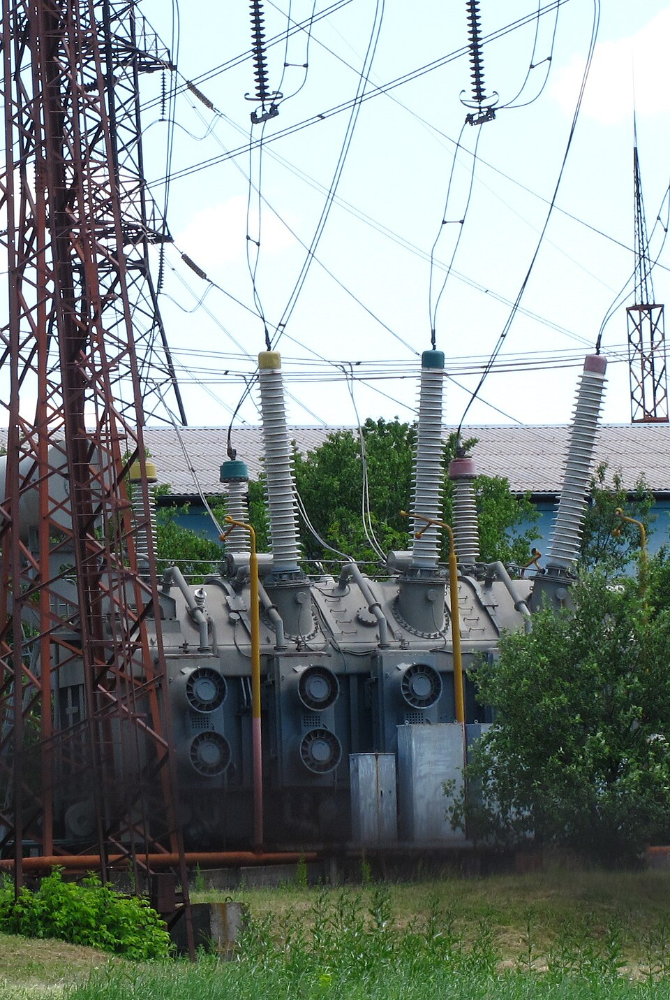
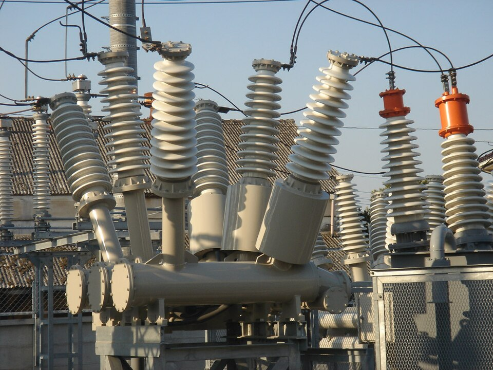
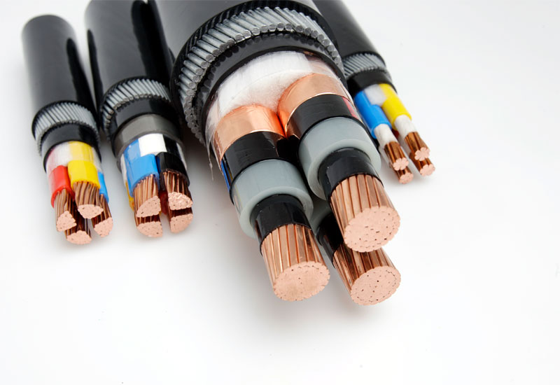
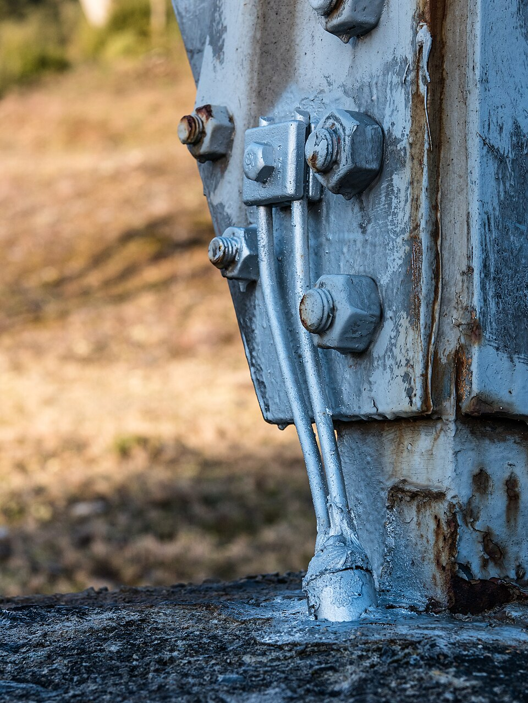
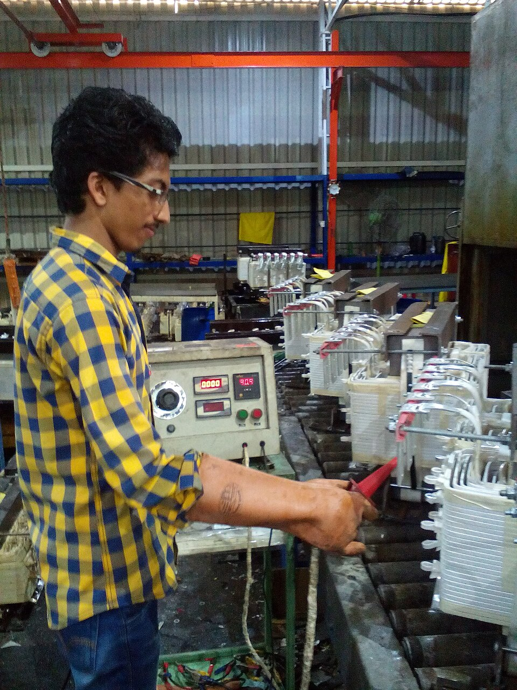
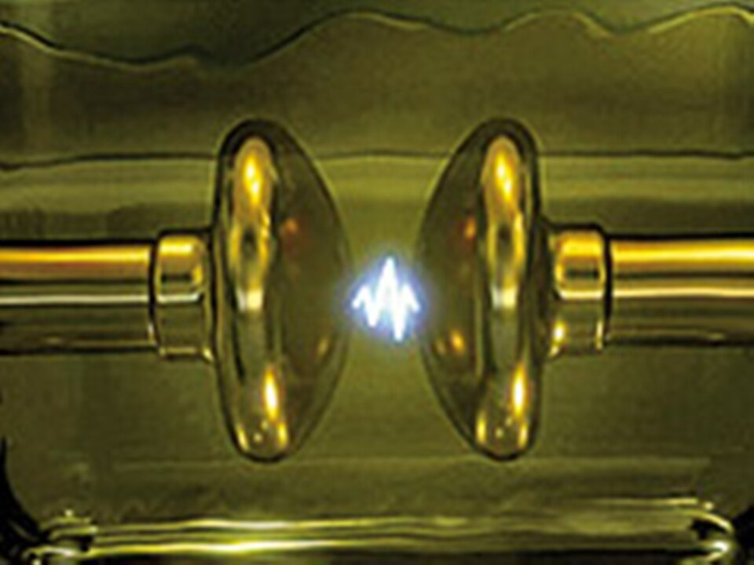

Надёжность
начинается
с точных
измерений.
Испытания электрооборудования
и проверка релейной защиты и автоматики.

01 / НАПРАВЛЕНИЯ
Точный подход
к каждой задаче
От проверки электроустановки здания
до испытаний высоковольтного оборудования.
Выберите направление, чтобы узнать состав работ.
Электроустановки
до 1000 В
Изоляция, цепь «фаза-нуль»,
УЗО, автоматы и АВР

до 1000 В
УЗО, автоматы и АВР
Электрооборудование
до 220 кВ
КРУ и КРУН, шины, вводы,
изоляторы и разрядники
до 220 кВ
изоляторы и разрядники
Релейная защита
и автоматика
Проверка устройств РЗА
в сетях 0,4–220 кВ

и автоматика
в сетях 0,4–220 кВ
Трансформаторы
и реакторы
Силовые и измерительные
трансформаторы до 220 кВ

и реакторы
трансформаторы до 220 кВ
Выключатели
и разъединители
Масляное, воздушное, элегазовое
и вакуумное оборудование

и разъединители
и вакуумное оборудование
Кабельные
линии
Испытания силовых кабелей
напряжением до 220 кВ

линии
напряжением до 220 кВ
Заземляющие
устройства
Сопротивление заземления
и непрерывность защитных цепей

устройства
и непрерывность защитных цепей
Электрозащитные
средства
Диэлектрические перчатки,
боты, штанги и инструмент

средства
боты, штанги и инструмент
Трансформаторное
масло
Визуальный контроль
и диэлектрическая прочность

масло
и диэлектрическая прочность
02 / О КОМПАНИИ
Знать состояние.
Принимать решения.
«Энергосфера» — энерготехническая компания в Уфе. Наше направление — испытания и измерения электроустановок, оборудования и систем защиты.
Проверяем характеристики изоляции, работу защит и коммутационной аппаратуры. Выявляем отклонения, которые важно учитывать при вводе оборудования в работу и дальнейшей эксплуатации.
03 / ВСЕ УСЛУГИ
Полный перечень
работ и испытаний.
Все направления и состав работ —
на отдельной странице услуг.
04 / СВЯЗАТЬСЯ С НАМИ
Начнём
с вашей задачи.
Подготовьте тип оборудования, класс напряжения
и перечень необходимых проверок — это поможет
определить объём работ.
с. Иглино, ул. Дайверов, д. 2Телефон+7 (993) 141-90-20 ↗Telegram+7 (993) 141-90-20 ↗Emailenergo-sfera@internet.ru ↗